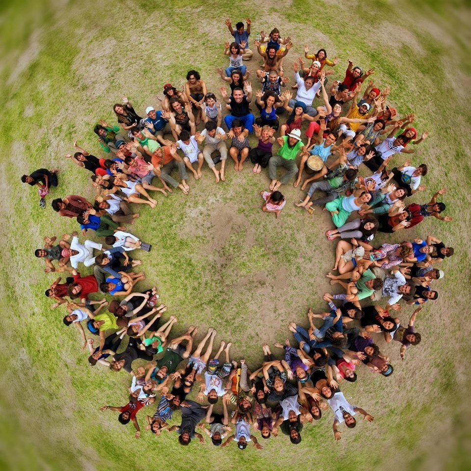
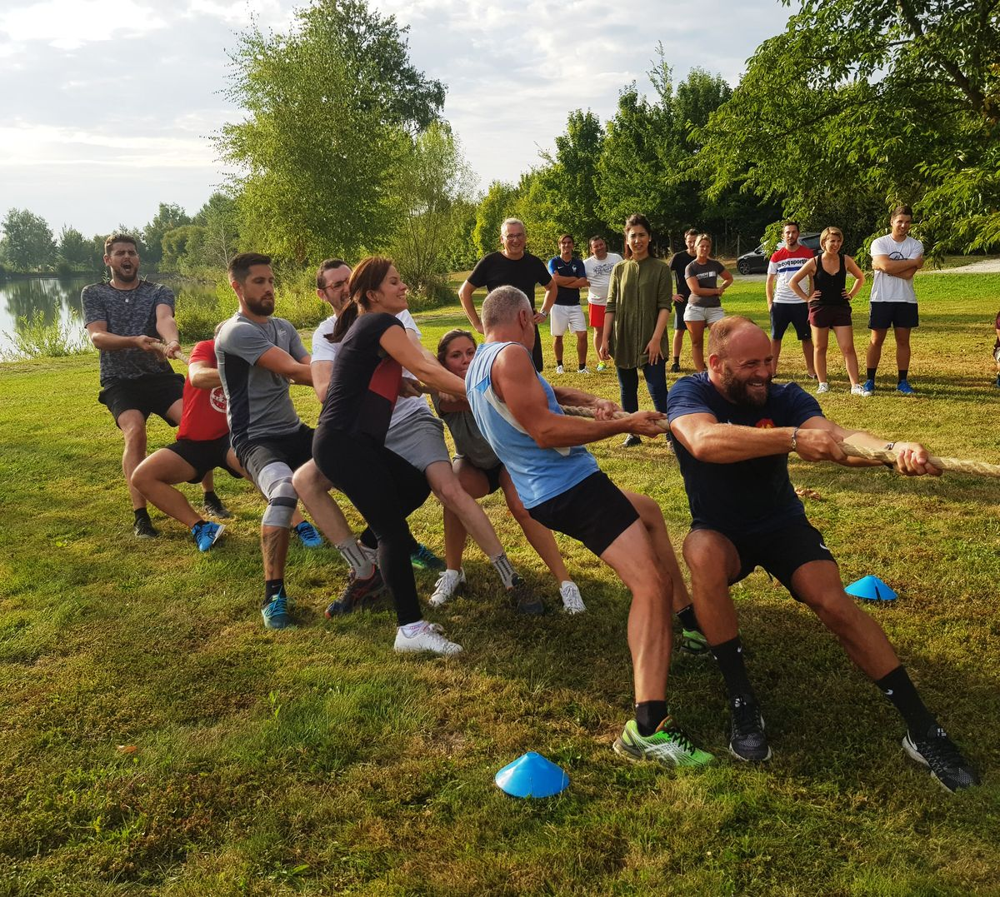
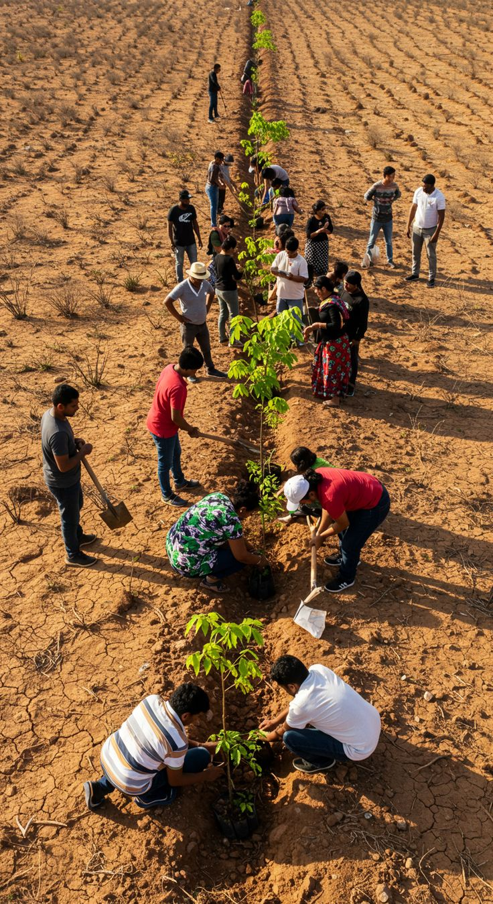
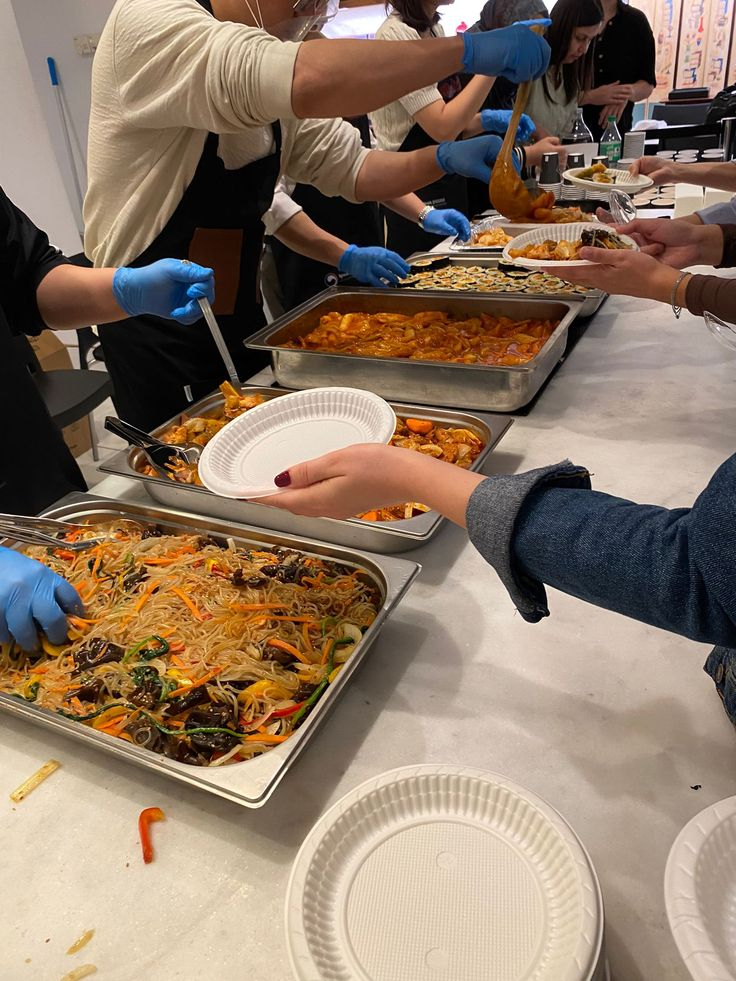

About The Mazenod Wellness Campaign
Mazenod Community Connect is a website created to promote the Mazenod Wellness Campaign, a community event focused on improving health, fitness and healthy living among residents of Mazenod, Lesotho. The campaign brings together young people, parents, local health workers and community leaders to participate in activities that encourage healthy lifestyles and community support.
The event includes free health check-ups, fitness activities, wellness talks, healthy food exhibitions and awareness programs about mental health and disease prevention. The main goal of the campaign is to educate the community about the importance of physical health, exercise and proper nutrition while creating unity and positive communication among residents.
Community Activities



